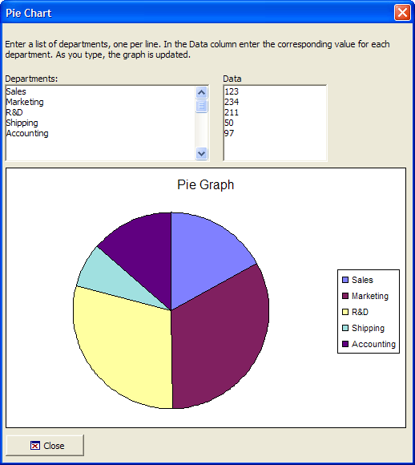

Interactive Pie Chart
This example shows how to use the Microsoft Office Chart ActiveX Control.

Example
 Note : To run this sample Xdialog script, you must have Microsoft Office installed on your machine.
Note : To run this sample Xdialog script, you must have Microsoft Office installed on your machine.
Dimension variables and create initial data to display in the chart.
dim lv as P dim Departments as C dim data as C dim labels[1] as C dim values[1] as N dim vl as P dim shared Chart as P dim Graph as P dim Graph.object as P dim Graph.class as C lv = local_variables() Departments = <<%a% Sales Marketing R&D Shipping Accounting %a% data = <<%a% 123 234 211 12 97 %a% |
Create the display code for the dialog box.
' The chart Graph Graph.class="owc.chart" dlg_title = "Pie Chart" dlg_source = <<%dlg% {can_exit=close} {startup=init} {wrap=100} {lf}; {font=tahoma,8} Enter a list of departments, one per line. In the Data column enter the corresponding value for each department. as you type, the graph is updated.; {lf}; {region} Departments:| Data; [%m%.50,7departments!data_change] | [%m%.25,7data!data_change]; {endregion}; {region001} {activex=100,25Graph}; {endregion001}; {initial_focus}<%i=$a5_window_close;O={J=C} {I=1} Close; %18,1.5&Close!close>; %dlg% |
Create the event handler code and the chart object. SetData()is a chart method.
dlg_event = <<%code% if (a_dlg_button = "close") .or. (a_dlg_button = "") then ui_modeless_dlg_close(dlg_title) end if if (a_dlg_button = "init") then a_dlg_button = "" initialize_arrays(lv) ' Add a chart to the graph object Chart = Graph.object.Charts.Add() Chart.HasTitle = .t. Chart.Title.Caption = "Pie Graph" Chart.Type = 18 ' Pie - See the list at the bottom for other types. Chart.HasLegend = .t. ' Add the two series dim series as P Series = Chart.SeriesCollection.Add() Series.Caption = "None" Series.SetData(1, -1, Labels) Series.SetData(2, -1, Values)
' Refer to XY Graph Graph.object.Refresh() end if if a_dlg_button ="data_change" then initialize_arrays(lv) Series.SetData(1, -1, Labels) Series.SetData(2, -1, Values)
' Refer to XY Graph Graph.object.Refresh() end if %code% |
Display the dialog box.
ui_modeless_dlg_box(dlg_title, dlg_source, dlg_event) |
Redefine the chart object when the data changes.
function initialize_arrays as V (vars as P) with vars dim count as N count = line_count( alltrim(Departments) ) if count = 0 then exit function end if labels.resize(count) values.resize(count) labels.clear() values.clear() for i = 1 to count labels[i] = word( Departments,i,crlf() ) values[i] = val( word( data,i,crlf() ) ) next i end with end function |
Next
Advanced Example
See Also
ActiveX Examples, Complete List of Supported Chart Types, Complete List of Supported Data Types
Limitations
Desktop applications only.